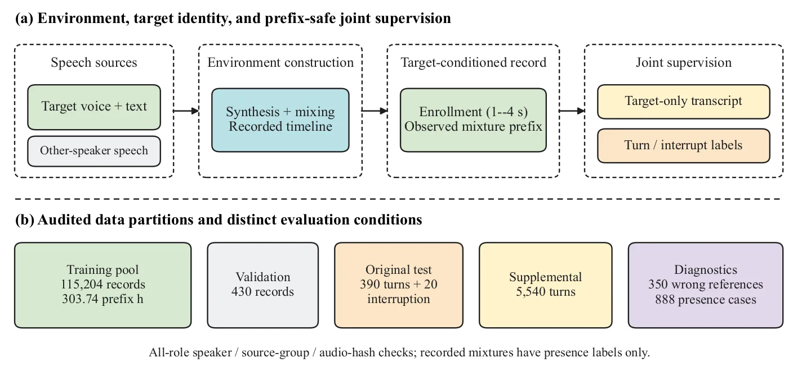
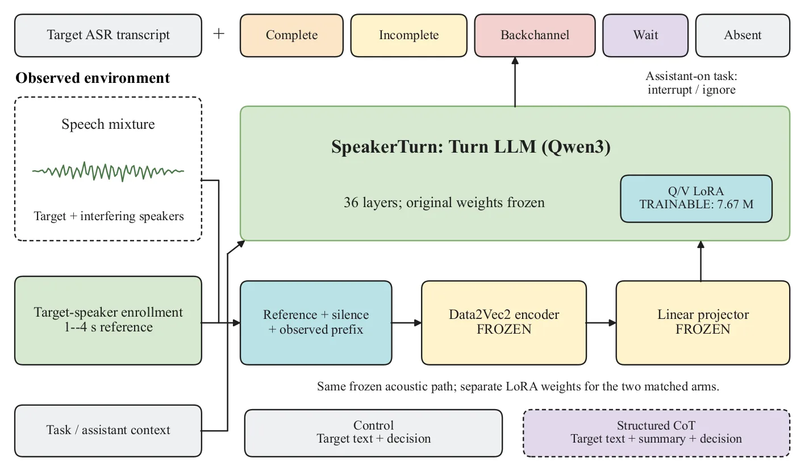

O Problema da Ambiguidade em Ambientes Multi-Falantes
Sistemas de diálogo por voz, especialmente os assistentes pessoais, operam em um desafio fundamental: determinar não apenas o que foi dito, mas quem disse e se a fala daquela pessoa está completa. Em cenários reais, múltiplos falantes podem estar presentes simultaneamente. Um problema crítico surge quando um falante interferente completa uma frase, enquanto o usuário designado (o alvo) está apenas pausando, reconhecendo o que foi dito ou pedindo tempo para pensar. Se o sistema confiar apenas na completude semântica da frase, ele pode interpretar erroneamente a fala do interferente como um comando final, interrompendo o usuário alvo no meio de sua explicação.
A detecção tradicional de turnos (turn-taking) muitas vezes trata a fala como um fluxo contínuo sem considerar a atribuição específica a um indivíduo. Modelos de atividade de voz (VAD) e diarização identificam quando alguém está falando e quem é, mas não necessariamente avaliam o estado semântico da contribuição desse falante específico. Por outro lado, modelos linguísticos podem prever se uma sequência de palavras parece completa, mas falham ao ignorar o contexto de quem está falando. A interseção desses dois problemas — atribuição de falante e inferência semântica de turno — é o foco do trabalho apresentado por Li, Shan e colaboradores.
A proposta central é que as decisões semânticas devem permanecer associadas ao falante inscrito (target speaker), apesar das interpretações concorrentes geradas por vozes concorrentes. Em sistemas de full-duplex, onde a escuta e a geração são contínuas, essa atribuição é vital. Os autores argumentam que a transcrição, a discriminação de turnos e a atribuição de interrupção fornecem evidências distintas que devem ser avaliadas separadamente. Um modelo pode ser excelente em transcrever o alvo, mas falhar em decidir se ele deve responder, ou vice-versa.
Para abordar essa ambiguidade, o paper introduz o SpeakerTurn, um framework que condiciona a inferência de turno semântico a uma referência de voz do alvo. Diferente de abordagens modulares que separam a identificação acústica da decisão linguística, o SpeakerTurn integra essas etapas. Ele utiliza uma arquitetura baseada em Large Language Models (LLMs) adaptados, que recebe tanto a mistura de áudio quanto uma referência de áudio do falante alvo. O objetivo é gerar simultaneamente a transcrição do alvo e o estado do turno, permitindo que o sistema tome decisões mais precisas sobre quando interagir.

Arquitetura e Metodologia: Joint Supervision
A base do SpeakerTurn é o CocktailASR-1, um modelo de reconhecimento de fala pré-treinado capaz de transcrever um alvo diretamente de uma mistura de áudio, utilizando uma referência de voz para filtrar as outras fontes. O CocktailASR-1 suporta saída vazia quando o alvo não está presente, o que é uma propriedade essencial para este trabalho. Os autores estendem essa interface supervisionando conjuntamente a transcrição do alvo e o estado semântico do turno. Isso significa que o modelo não aprende apenas a converter áudio em texto, mas também a mapear esse texto para um estado conversacional específico.
A arquitetura do modelo, ilustrada na Figura 2, mantém o caminho acústico congelado (frozen), herdado do CocktailASR-1, e aplica adaptação via LoRA (Low-Rank Adaptation) nas partes do LLM. LoRA é uma técnica de fine-tuning eficiente que atualiza apenas uma pequena fração dos parâmetros do modelo, preservando o conhecimento prévio enquanto se adapta à tarefa específica. Existem dois braços de saída: um para o texto alvo e outro para as decisões de turno. Ambos compartilham a mesma representação acústica congelada, mas utilizam pesos LoRA separados para gerar as saídas.
O modelo é treinado para distinguir cinco estados semânticos de turno para o falante alvo: 1) Completo: o usuário terminou sua contribuição e espera resposta; 2) Incompleto: o usuário ainda está falando ou pausando dentro de uma frase; 3) Backchannel: o usuário está fazendo sons de confirmação (como 'uh-huh') sem contribuir com conteúdo novo; 4) Espera (Wait): o usuário está explicitamente ou implicitamente pedindo tempo ou pausando a interação; 5) Ausência do Alvo: o falante designado não está falando ou não está presente na mistura.
Além dos cinco estados, há uma tarefa separada de detecção de interrupção. Isso é importante porque uma interrupção não é apenas um estado de turno, mas uma ação ativa de um falante (geralmente o sistema ou outro humano) que corta a fala do alvo. O modelo deve distinguir entre uma interrupção intencional e outras sobreposições de fala. A supervisão conjunta força o modelo a vincular as decisões semânticas ao conteúdo correspondente do alvo, em vez de tratar a detecção de turno como uma classificação acústica isolada.

Chain-of-Thought (CoT) e Supervisão Estruturada
Uma das contribuições investigadas no paper é o uso de Chain-of-Thought (CoT) estruturado para melhorar as decisões. A ideia é que, ao forçar o modelo a representar explicitamente a presença do falante, as pistas semânticas e o contexto do assistente antes de gerar a decisão final, ele possa tomar decisões mais robustas. No braço CoT, o modelo gera um resumo estruturado intermediário que codifica essas informações. Isso testa se a supervisão intermediária melhora o raciocínio do modelo, sem assumir que o modelo possui um raciocínio interno fiel ou consciente.
A hipótese por trás do CoT é que a representação explícita de cues (pistas) auxilia o modelo a desambiguar situações complexas. Por exemplo, se o alvo diz 'Espera...' e o interferente fala uma frase completa, o CoT pode ajudar o modelo a registrar que o alvo está em estado de 'Espera' e que a fala do interferente é irrelevante para a decisão de turno do alvo. No entanto, os resultados mostram que essa abordagem tem efeitos mistos. Embora o CoT melhore a qualidade da transcrição do alvo (reduzindo o erro de caracteres), ele não melhora significativamente a F1 macro da detecção de turno.
Isso sugere que a complexidade adicional de gerar o raciocínio estruturado pode não ser necessária para a tarefa de classificação de turno, ou que o modelo já captura essas informações de forma implícita nos pesos do LoRA. A separação entre a melhoria na transcrição e a estagnação na detecção de turno destaca a necessidade de avaliar essas métricas separadamente. Melhorar a precisão do texto não garante que o modelo entenda melhor o estado conversacional do falante.
Resultados e Análise
No conjunto de testes sintético, o SpeakerTurn atinge uma F1 macro de cinco estados de 0.811 e uma Taxa de Erro de Caracteres (CER) de transcrição do alvo de 4.20%. Esses números indicam um desempenho sólido na distinção dos estados conversacionais e na recuperação do texto do alvo. Um ponto forte é a capacidade do modelo de resolver corretamente todos os dez pares de interrupção com troca de referência (reference-swapped interruption pairs). Isso significa que, mesmo quando a referência de áudio é trocada ou ambígua, o modelo consegue identificar corretamente quem deve responder e se a interrupção é válida.
A análise detalhada revela que o desempenho em transcrição, discriminação de turno e retenção de reconhecimento são distintos. Um modelo pode ter baixa CER (transcreve bem o alvo) mas falhar em detectar que o alvo ainda está falando (estado incompleto). Isso é crítico para sistemas de interação em tempo real. Se o sistema transcreve perfeitamente, mas acha que o turno acabou, ele pode responder prematuramente, interrompendo o usuário.
Os autores comparam configurações de decisão apenas (decision-only) versus configurações com CoT estruturado. A configuração CoT melhora a transcrição de validação, demonstrando que a representação estruturada ajuda na recuperação do texto. No entanto, a F1 macro de turno não melhora. Isso reforça a ideia de que a tarefa de classificação de turno e a tarefa de transcrição, embora relacionadas, exigem otimizações diferentes. A adição de complexidade para raciocínio estruturado não se traduz em melhorias na tomada de decisão de turno neste cenário.
Outro ponto importante é a diferença de comportamento entre a transcrição em formato joint (conjunta) e o reconhecimento de interface nativa. O modelo foi projetado para operar em um fluxo contínuo, mas a avaliação mostra que as decisões de turno podem variar dependendo de como o áudio é segmentado ou fornecido ao modelo. Isso destaca a importância de considerar a interface de entrada e a granularidade temporal na implementação de sistemas reais.
Discussão e Implicações para Sistemas de Diálogo
O trabalho do SpeakerTurn destaca a necessidade de repensar a arquitetura dos sistemas de diálogo multi-falantes. Em vez de depender de módulos separados para VAD, diarização, ASR e detecção de turno, a abordagem de joint supervision oferece uma maneira unificada de lidar com a ambiguidade. Ao treinar o modelo para prever o texto e o estado do turno simultaneamente, ele aprende a correlacionar características acústicas e linguísticas específicas do falante alvo.
A distinção entre os cinco estados semânticos é particularmente útil para assistentes que precisam ser polidos e não invasivos. Saber a diferença entre 'incompleto' e 'backchannel' permite que o sistema espere adequadamente ou apenas confirme a escuta, sem interromper o fluxo natural da conversa. A detecção de interrupção separada garante que o sistema possa reagir a intervenções reais sem confundí-las com sobreposições normais.
No entanto, os resultados também servem como um aviso contra a otimização excessiva de uma única métrica. A melhoria na transcrição com CoT, sem ganho na detecção de turno, mostra que métricas de desempenho de ASR não são proxies válidos para a qualidade da interação conversacional. Desenvolvedores devem avaliar a detecção de turno e a transcrição separadamente ao adaptar modelos para ambientes multi-falantes.
As limitações do dataset sintético são um ponto de atenção. Embora o controle experimental seja valioso para isolar variáveis, a generalização para cenários do mundo real requer validação em dados gravados com ruído e variações naturais. Os autores mencionam que misturas de voz gravada carregam apenas rótulos de presença, o que limita a granularidade da avaliação em dados reais. Futuros trabalhos podem explorar a transferência do modelo treinado sinteticamente para domínios reais, possivelmente com adaptação adicional.
Conclusão
O SpeakerTurn apresenta uma abordagem robusta para a detecção de turnos semânticos condicionada ao falante em ambientes multi-falantes. Ao integrar a transcrição do alvo e a classificação de estado do turno em um único framework baseado em LLM, os autores demonstram que é possível distinguir com precisão quando um usuário alvo terminou de falar, mesmo na presença de interferentes. Os resultados mostram que a atribuição de alvo, a discriminação semântica e a retenção de reconhecimento são tarefas distintas que devem ser avaliadas separadamente.
A investigação sobre a supervisão de Chain-of-Thought estruturado oferece insights valiosos sobre o trade-off entre complexidade do modelo e ganho de desempenho. Embora o CoT melhore a transcrição, ele não melhora a detecção de turno, sugerindo que a representação implícita pode ser suficiente para essa tarefa. Este trabalho abre caminho para sistemas de diálogo mais naturais e responsivos, capazes de lidar com a complexidade das conversas humanas em ambientes sociais.
O que fica
- A completude semântica não define o turno; a identidade do falante é crucial para saber quando responder.
- SpeakerTurn adapta o CocktailASR-1 para prever simultaneamente o texto do alvo e seu estado conversacional.
- O modelo distingue cinco estados: completo, incompleto, backchannel, espera e ausência do alvo.
- A supervisão de raciocínio estruturado (CoT) melhora a transcrição, mas não a precisão da detecção de turno.
Paper original: SpeakerTurn: Target-Speaker Semantic Turn Detection in Multi-Speaker Environments
Comentários
Nenhum comentário ainda. Seja o primeiro.